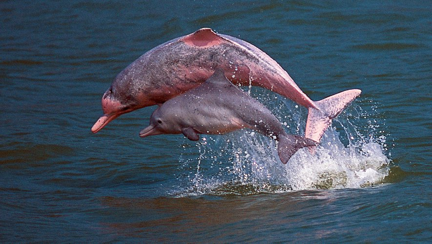
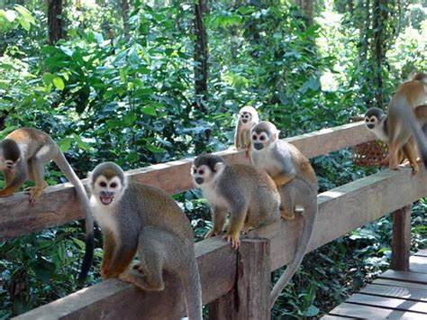
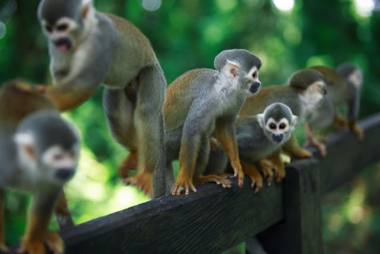
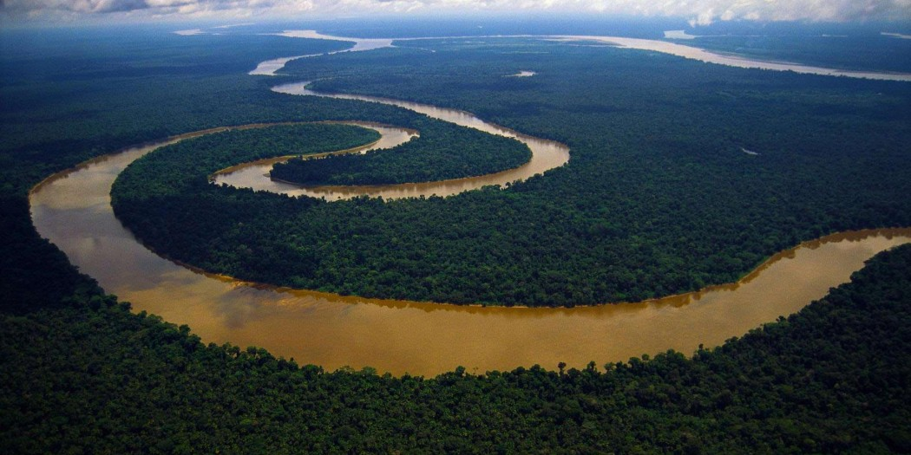
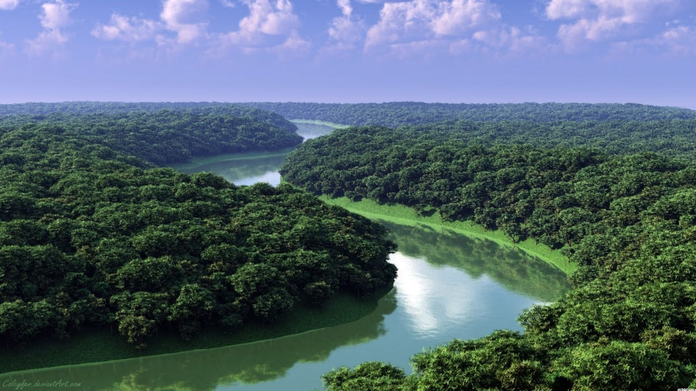
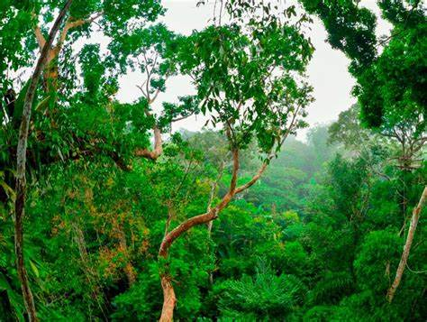
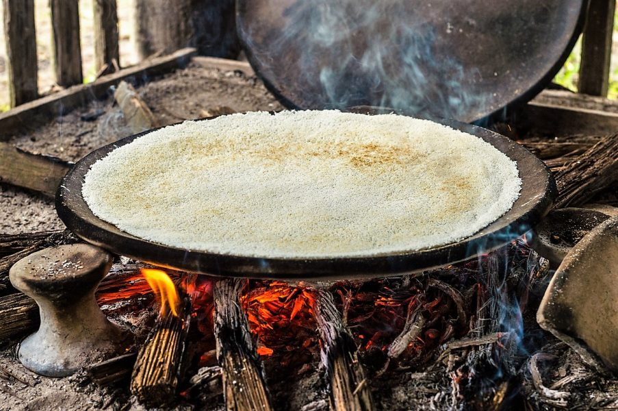
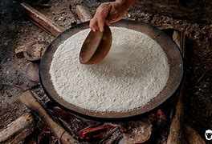

Leticia
Leticia est la capitale de l'Etat d'Amazonas.
Elle occupe une position stratégique puisqu'elle se trouve aux frontières du Brésil et du Pérou.
C'est un important centre de pêche, d'activités agroalimentaires et de tourisme.
Lac tarapoto
Le lac de Tarapoto, situé en Colombie, lieu sacré pour les populations indigènes,
et célèbre pour ses colonies de dauphins roses, a été ajouté à la Convention relative aux zones humides d'importance
internationale particulièrement comme habitats des oiseaux d'eau, dite Convention de Ramsar. Adopté en 1971,
ce traité vise à protéger les zones humides, afin de préserver la faune et la flore et d'endiguer leur disparition.

L'ile des singes

Située à quarante-cinq minute en bateau, l’île des singes recueille une
population de plus de cinq milles spécimens. Si vous cherchez que faire à Leticia, une journée dans
cet endroit est l’idée parfaite ! Accoutumés à la présence humaine sur les lieux, les singes-écureuils
seront ravis de venir vous voir et de manger dans vos mains. En conséquent, prévoyez des affaires
adéquates car ces dernières ont de fortes chances de se retrouver recouvertes des traces de vos nouveaux amis !
Fleuve amazone
C’est l’une des principales raisons de venir visiter Leticia ! De nombreuses options s’offrent à vous
et il vous est possible de vous lancer dans des excursions en bateau ou kayak. Certaines agences vous offrent la possibilité
de faire quelques treks à la rencontre de communautés indigènes et les plus téméraires d’entre vous pourront s’essayer à la pêche aux piranhas.
Si vous vous demandez que faire à Leticia,une visite de l’Amazone est un incontournable et cette ville est le point de départ idéal cela !

Réserve naturelle tanimboca

Bien que ce parc se retrouve petit à petit rattrapé par la civilisation,
il vous offre l’opportunité de vous perdre dans la nature.Toutes sortes d’activités vous y seront proposées
telles que l’accrobranche, le kayak ou la randonnée, mais pas que ! Il vous est également possible d’organiser
une rencontre avec un chaman local issu de la communauté indigène, d’organiser des safaris nocturnes ou des visites
dans la jungle à la recherche des caïmans, iguanes et autres espèces qui la peuplent.
Spécialité locale
Située à la frontière de trois pays, Leticia mérite que vous vous lanciez à la découverte
de la cuisine locale. C’est un incontournable des choses à faire lorsque vous cherchez que faire à Leticia.
Le plat typique de la ville se nomme casabe , et se rapproche de la pizza. Mais à la place de nos farines traditionnelles,
la pâte utilisée ici est faite à base de yuca. Vous y trouverez également de nombreux ceviche ou autres spécialités péruviennes et brésiliennes.
Les plus téméraires d’entre vous pourront tenter de gouter le mojojoy , qui est un ver plutôt grand issue de la jungle environnante.
